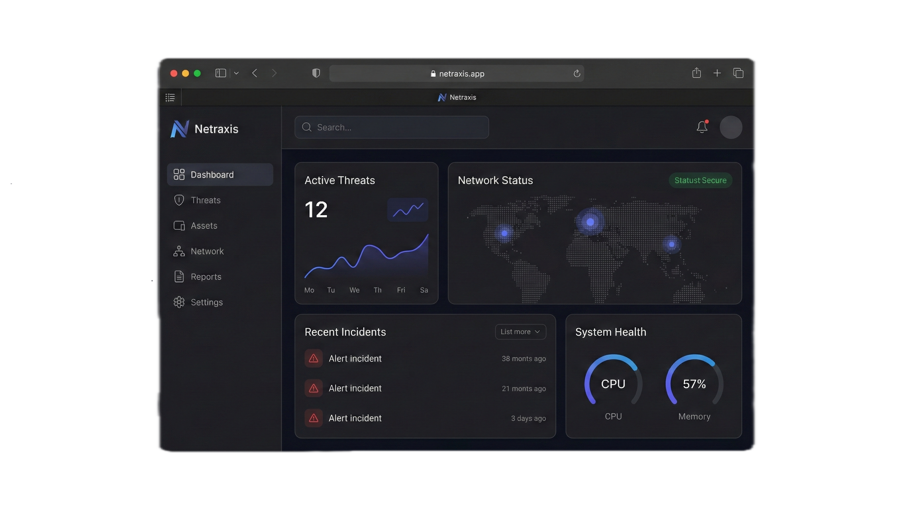
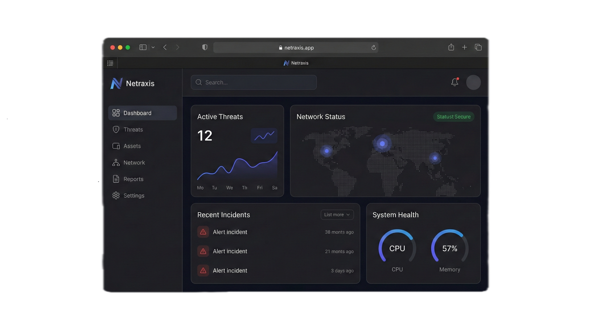

NETRAXIS
NEXT-GEN THREAT DETECTION
THE PROJECT
"See the Unseen. Secure the Future."
Netraxis is a high-performance threat detection engine designed to instantly identify Malicious, Safe, or Suspicious assets. Unlike standard cloud antiviruses, Netraxis runs entirely locally using custom heuristics, ensuring that your data never leaves your machine.
THE OBJECTIVE
To build a privacy-first security tool that performs deep analysis without external dependencies. The goal was to move beyond simple signature matching and implement intelligent analysis that detects threats based on file structure, entropy, and binary headers.
THE TECH STACK
- Python 3 (Core Logic)
- Custom Heuristics Engine
- Hashing (Hashlib)
- CLI (Command Line Interface)
KEY LEARNINGS
This project heavily involved Cybersecurity Fundamentals. I learned how to calculate file entropy to detect packed malware, how to parse binary headers to find hidden scripts, and how to manage a local threat database efficiently for rapid lookups.
CHALLENGES & SOLUTIONS
The Challenge: Detecting unknown threats (Zero-Day) without a cloud database.
The Solution: I implemented a Heuristic Breakdown system. By analyzing the "randomness" (entropy) of a file's code and checking for suspicious patterns in the URL structure, the engine can flag likely threats even if it has never seen that specific file before.

 
